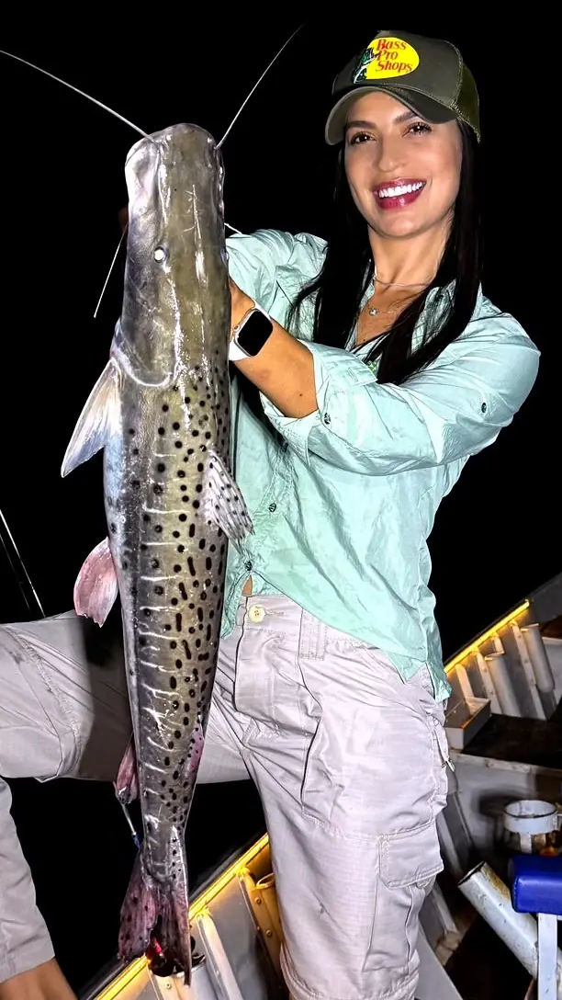
Pesca à noite
A pescaria continua depois que escurece: os barcos também saem à noite. Horário e valor se combinam pelo WhatsApp.
Quatro noites a bordo e três dias inteiros de pesca, de domingo a quinta, com saída do Pesqueiro Itaju, em Aquidauana (MS).
R$ 3.500 por pessoa, para grupo de 16
São quatro pessoas por camarote e quatro por barco. Com menos gente, mais dias ou em fim de semana, o valor é recalculado.
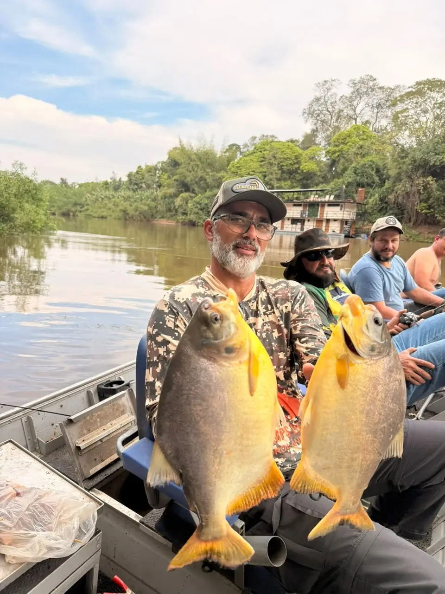
Sinal de R$ 500 na reserva. O restante pode ser dividido no Pix e fica quitado até um dia antes do embarque.
Os barcos têm 7 metros, são mais largos e levam motor de 40 hp. Cada pescador fica numa poltrona giratória, e o piloteiro, o combustível e as iscas vivas já estão no pacote.
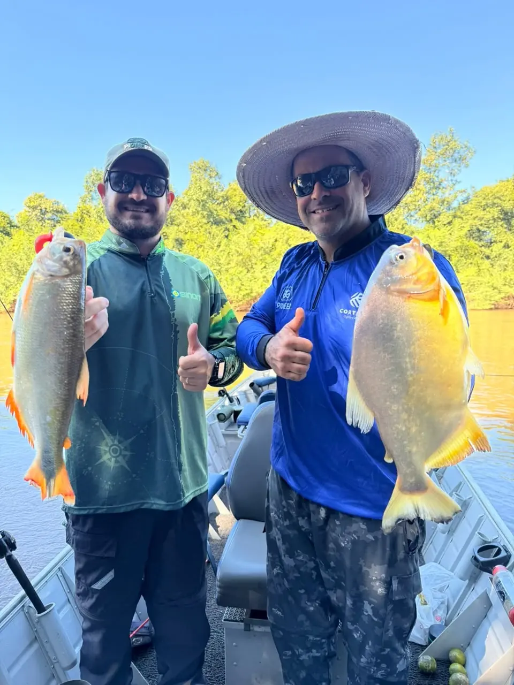
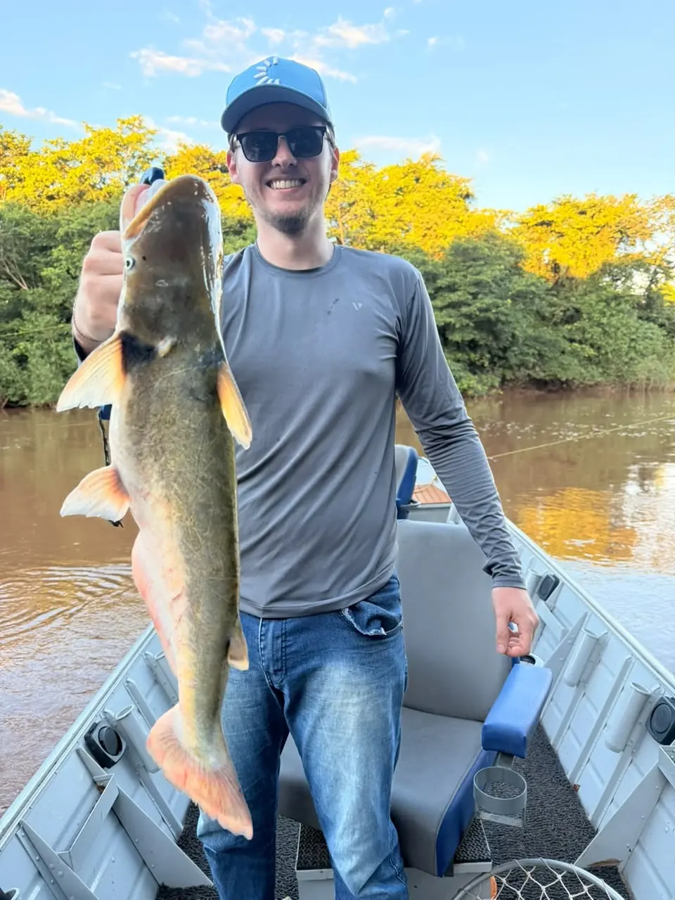
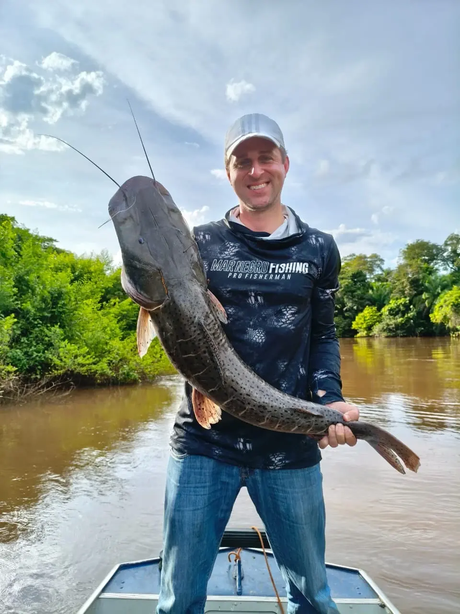
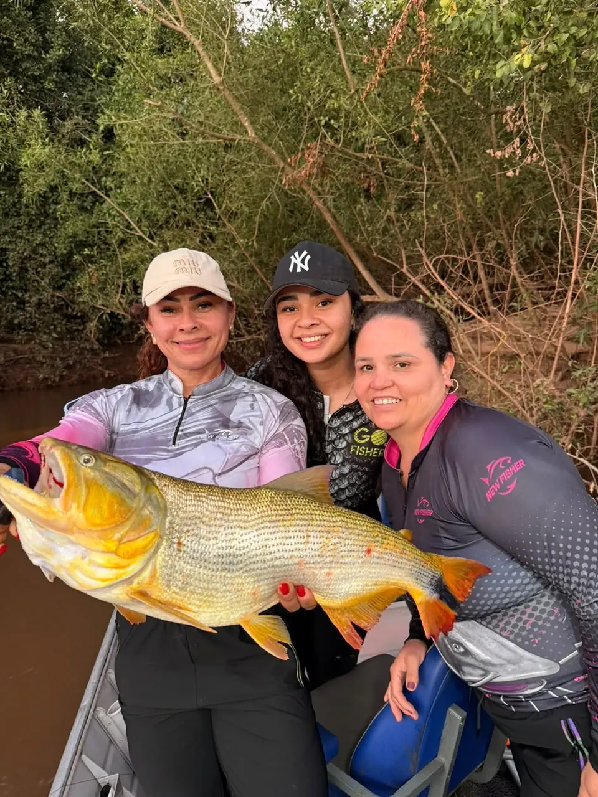
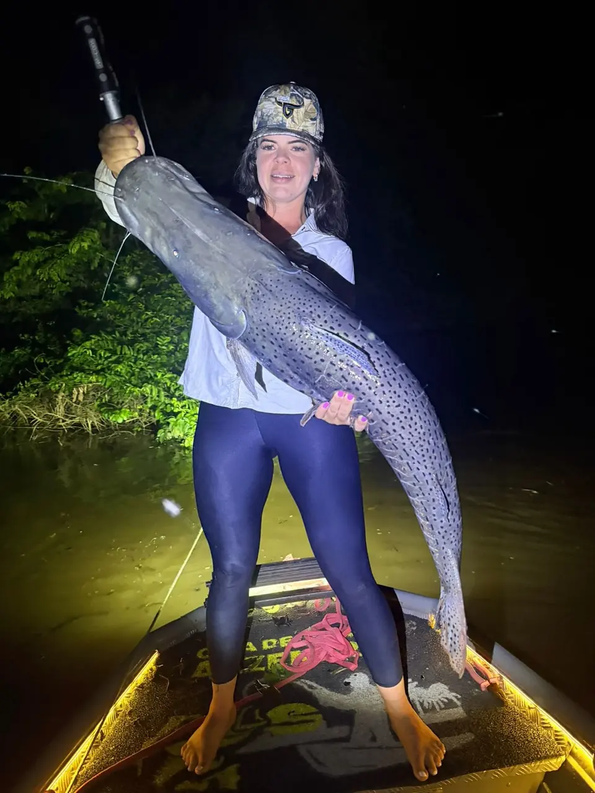
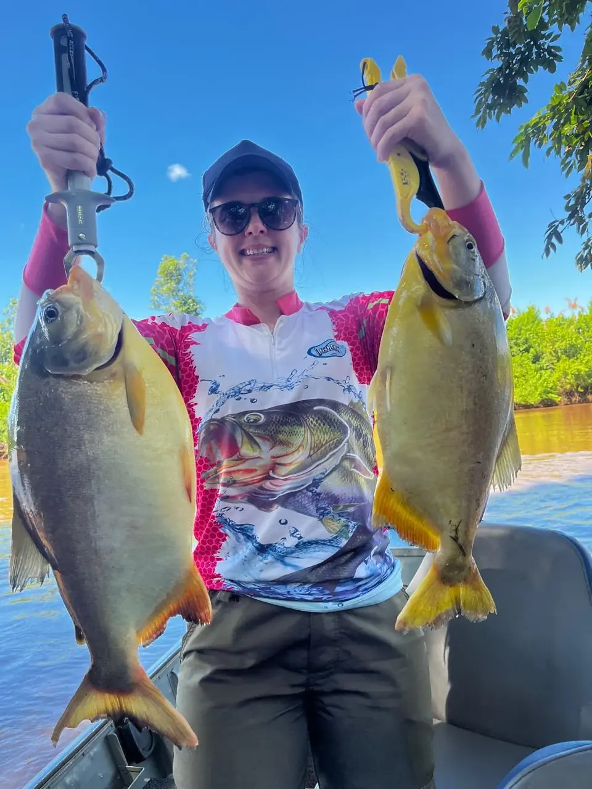
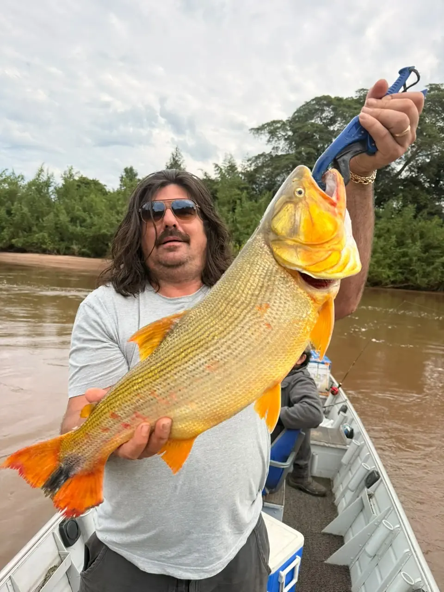
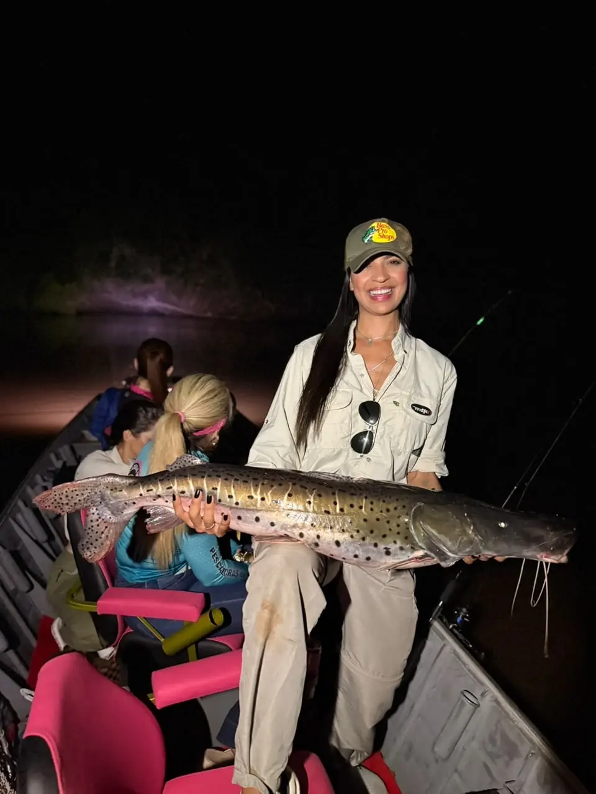
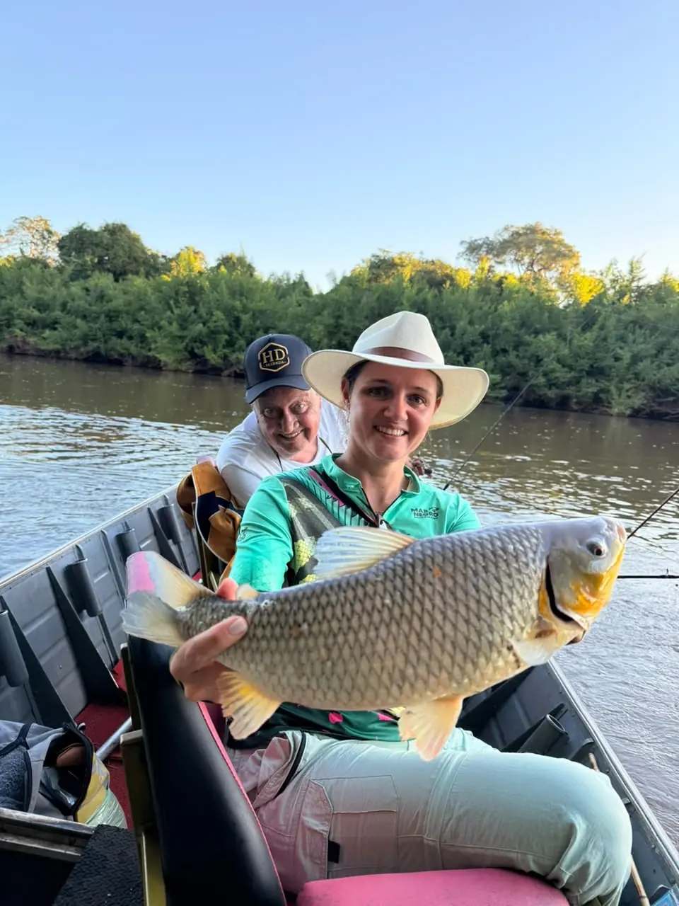
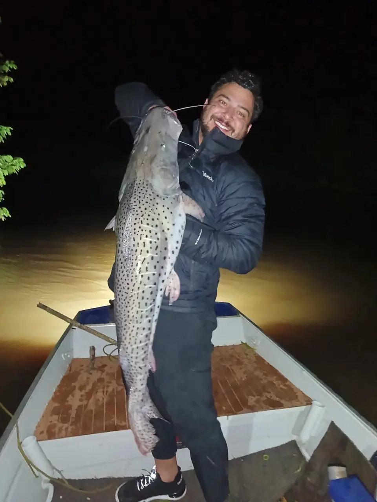

A pescaria continua depois que escurece: os barcos também saem à noite. Horário e valor se combinam pelo WhatsApp.
No pacote, são quatro pessoas por camarote, todos com ar-condicionado. O flutuante tem sala climatizada com TV, cozinha, internet Starlink e um deck aberto no último andar.
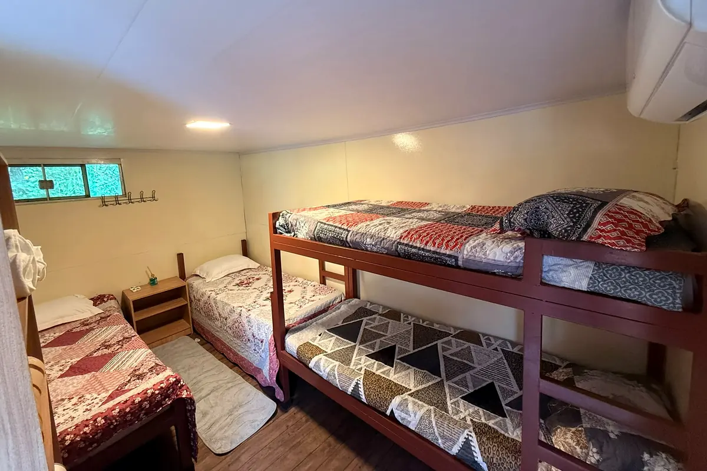